📋 Product Backlog Building
Este estudo de caso utiliza a técnica Product Backlog Building (PBB) para estruturar e organizar as funcionalidades de uma solução digital para a empresa fictícia HealthNet, uma rede de clínicas e hospitais com atuação nacional. A proposta é resolver problemas reais enfrentados pela empresa, como sistemas legados desconectados, falhas nos agendamentos, prontuários descentralizados e erros na dispensação de medicamentos.
Através do PBB, foi possível identificar os principais atores envolvidos, seus objetivos e as necessidades de negócio, transformando essas informações em um backlog colaborativo e orientado a valor. O resultado é uma visão clara e priorizada do produto, alinhada com os diferentes perfis de usuários, desde pacientes até o diretor de tecnologia da organização.
1. Empresa HealthNet
1.1 Problemas identificados
Antes da implementação da nova solução digital, a HealthNet enfrentava uma série de desafios operacionais, clínicos e de comunicação que comprometiam a qualidade do atendimento e a eficiência dos processos internos. Entre os principais problemas identificados, temos:
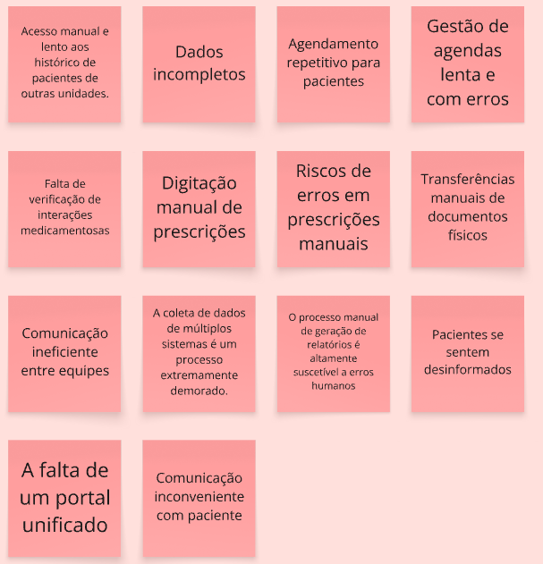
1.2 Expectativas da solução
Uma vez identificado os problemas, o sistema da HealthNet busca entregar os seguintes resultados:
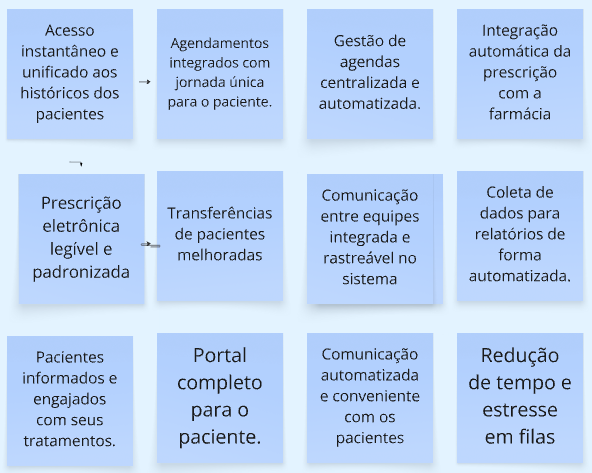
2. Personas & Features
As personas representam os usuários do sistema, e identificamos sua jornada (o que faz) de trabalho atual, e o que se espera com a solução.
2.1 Jornadas e Expectativas das Personas
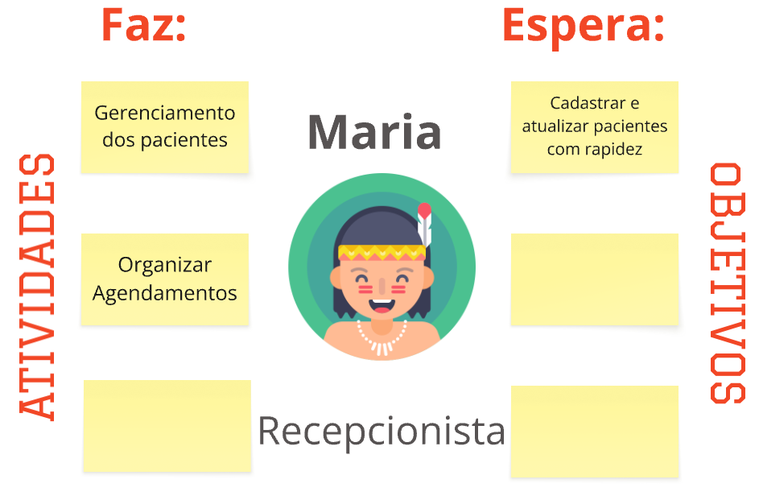
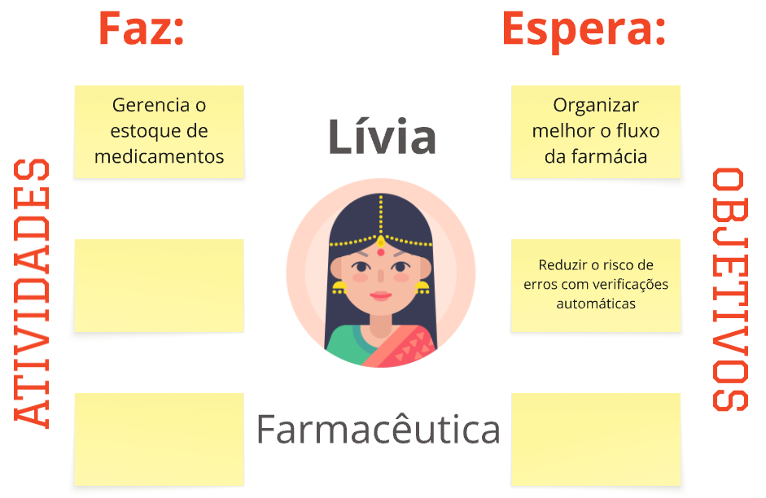
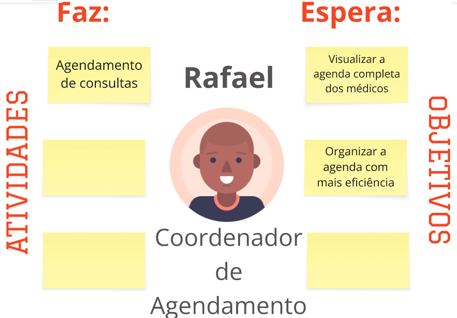
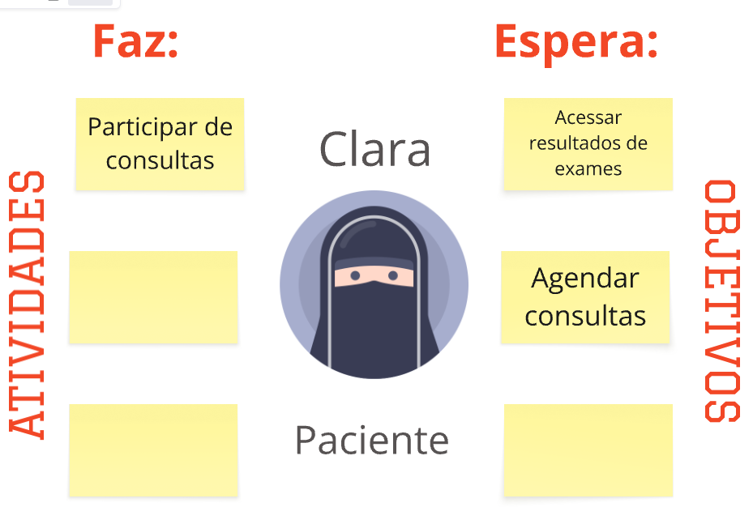
3. Features
Uma vez identificada as Personas e suas atividades, é possível organizar as Features, que são as macrofuncionalidades que o sistema possuirá, associando os problemas que cada Feature resolve e seus benefícios.
Recepcionista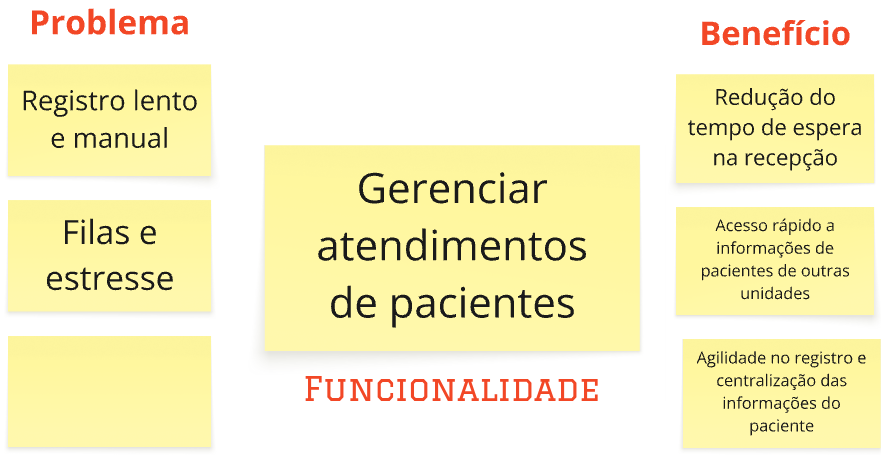
Médico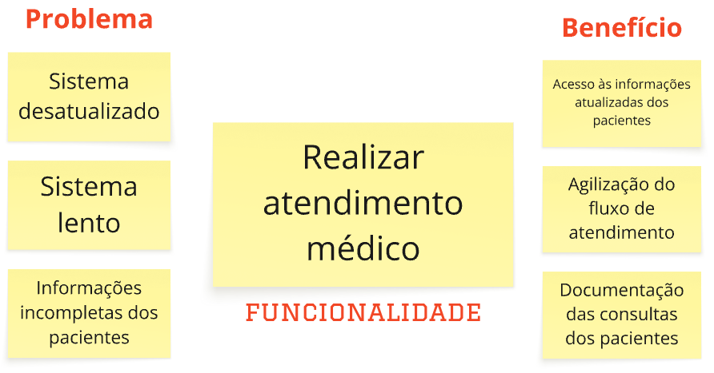
Farmacêutica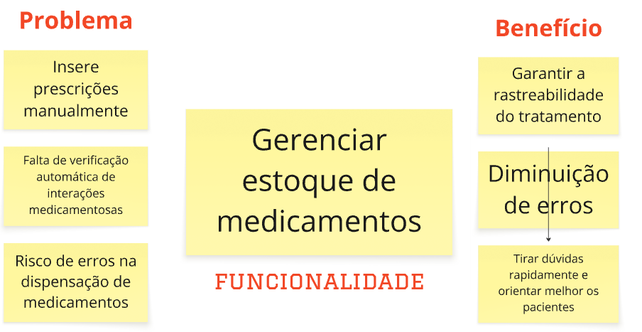
Coordenador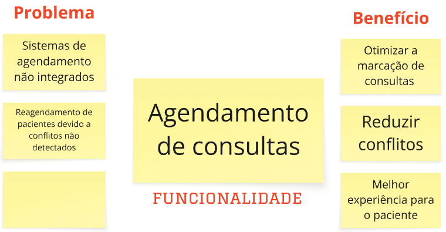
Paciente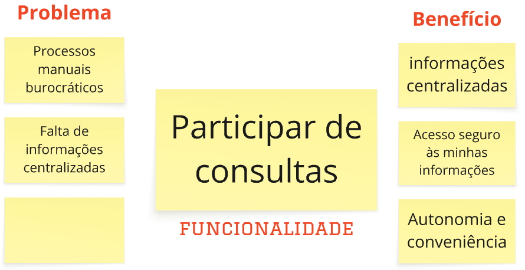
Diretor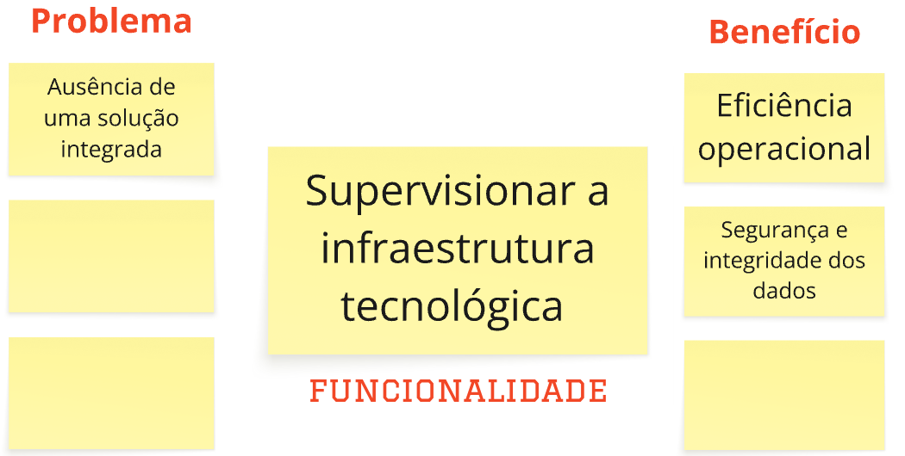
4. Product Backlog Item e COORG
Identificadas as Features do sistema, cada uma foi quebrada em microfuncionalidades com maior nível de granularidade, formando os PBIs (Product Backlog Item). Eles são mais precisos que a Feature, e têm o papel de ajudar o desenvolvedor a entender exatamente o que deve ser construído.
4.1 Priorização
4.1.1 Frequência de Uso
A frequência de uso é determinada com uma nota de 1 à 5, que varia conforme a descrição abaixo:
- (5) Hora a Hora: utilizado mais de uma vez ao dia.
- (4) Diário: utilizado uma vez no dia, pelo menos.
- (3) Semanal: utilizado uma, duas ou três vezes na semana.
- (2) Mensal: utilizado uma vez no mês, ou pouco mais de uma vez.
- (1) Trimestral: utilizado, pelo menos, uma vez a cada 3 meses.
4.1.2 Valor de Negócio
Já o valor de negócio é determinado com uma nota de 1 à 3, que varia conforme descrição abaixo:
- (3) Alto: muito importante, principal, algo com um valor de negócio alto.
- (2) Médio: algo que tem relevância, um valor de negócio médio.
- (1) Baixo: algo que faz sentido, mas que não agrega muito valor no momento atual, um valor de negócio baixo.
4.1.3 Pontuação Final
Valor_do_PBI = Valor de Negócio + Frequência de Uso
4.2 Listagem dos PBIs por Feature
4.2.1 Feature: Gerenciar atendimento dos pacientes
| PBI | Priorização |
|---|---|
| Registrar novos pacientes | 7 |
| Consultar pacientes registrados | 6 |
| Atualizar informações dos pacientes regulares | 5 |
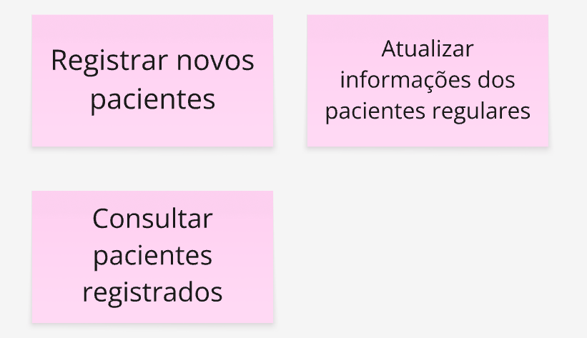
4.2.2 Feature: Realizar atendimento médico
| PBI | Priorização |
|---|---|
| Acessar históricos médicos dos pacientes | 7 |
| Gerar atestados | 6 |
| Prescrever medicamentos | 6 |
| Inserir notas de observações | 5 |
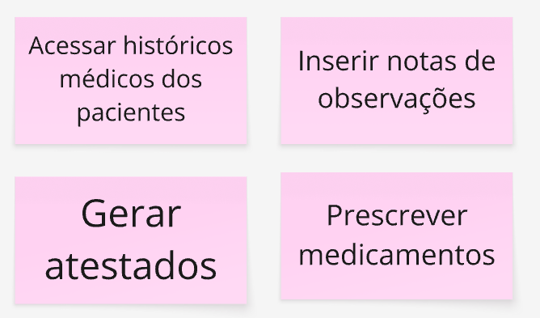
4.2.3 Feature: Gerenciar estoque de medicamentos
| PBI | Priorização |
|---|---|
| Dispensar medicamentos | 7 |
| Registrar medicamentos | 6 |
| Registrar dispensação no histórico do paciente | 6 |
| Imprimir etiqueta com instruções para o paciente | 5 |
| Consultar informações/bula do medicamento | 5 |
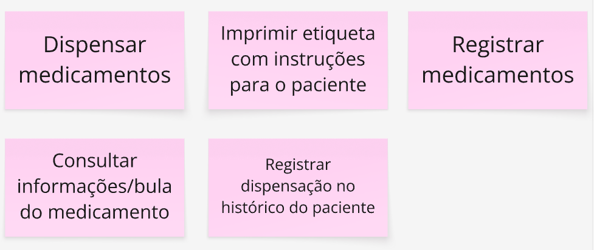
4.2.4 Feature: Agendamento de consultas
| PBI | Priorização |
|---|---|
| Cancelar ou remarcar uma consulta existente | 7 |
| Marcar nova consulta para um paciente | 6 |
| Visualizar agenda unificada de múltiplos médicos | 6 |
| Bloquear horários na agenda | 5 |
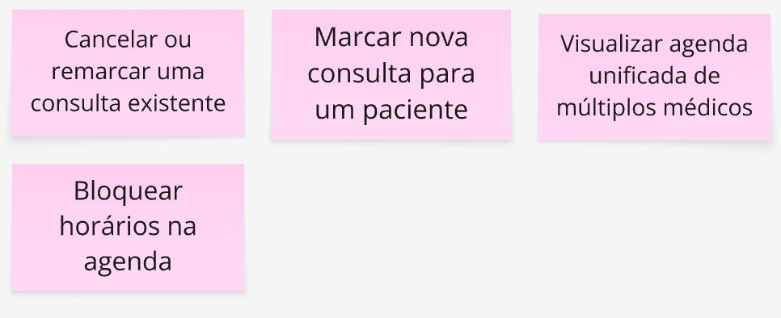
4.2.5 Feature: Gerenciar atendimento dos pacientes
| PBI | Priorização |
|---|---|
| Realizar login no portal | 6 |
| Realizar cadastro no portal | 6 |
| Realizar logout no portal | 6 |
| Agendar consultas no portal | 5 |
| Visualizar seu histórico de exames e laudos | 5 |
| Baixar resultados de exames | 4 |
| Visualizar suas próximas consultas | 3 |
| Atualizar dados cadastrais | 3 |
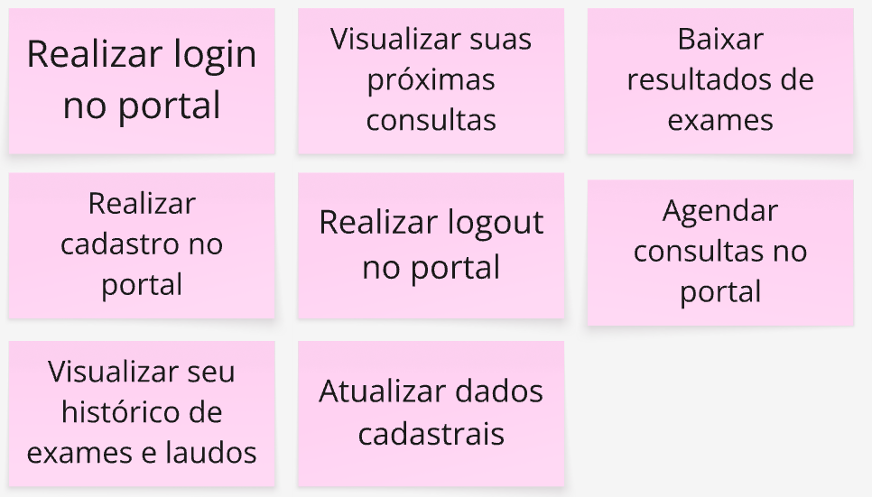
4.2.6 Feature: Supervisionar a infraestrutura tecnológica
| PBI | Priorização |
|---|---|
| Realizar Backups | 7 |
| Visualizar logs do sistema | 7 |
| Realizar restaurações do sistema | 7 |
| Emitir relatórios de desempenho | 6 |
| Monitorar o desempenho do sistema | 6 |
| Controlar permissões de acesso | 4 |
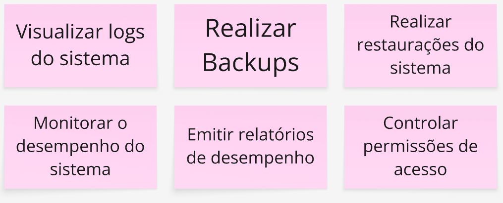
5. Histórias de Usuário e BDD
Nesta etapa, os PBIs priorizados foram refinados em Histórias de Usuário, com foco em representar claramente a perspectiva dos usuários e suas necessidades no uso do sistema. Para garantir que os requisitos estejam bem definidos e testáveis, cada história é complementada por critérios de aceitação escritos com base na técnica de Behavior-Driven Development (BDD). Essa abordagem orientada a comportamento contribui para a construção de funcionalidades alinhadas aos objetivos de negócio e à experiência esperada pelo usuário final.
5. Relação de Histórias e BDD
| PBI | User Story | BDD |
|---|---|---|
| Registrar novos pacientes | Eu, como recepcionista, quero registrar novos pacientes, para reduzir o tempo de espera na recepção. | Dado que a recepcionista está registrando o paciente utilizando o sistema, quando ela preenche os dados do novo paciente, então o paciente deve ser adicionado ao sistema e o tempo de espera na recepção deve ser reduzido. |
| Atualizar informações dos pacientes regulares | Eu, como recepcionista, quero atualizar informações dos pacientes regulares, para ter agilidade no registro e centralização das informações do paciente. | Dado que a recepcionista está logada no sistema e está na tela de cadastro do paciente, quando localiza o paciente pelo nome ou CPF e edita os campos de informações e confirma a atualização, então o sistema deve salvar os novos dados no cadastro do paciente e registrar a data e o usuário responsável pela alteração. |
| Consultar pacientes registrados | Eu, como recepcionista, quero consultar pacientes registrados, para ter acesso rápido a informações de pacientes de outras unidades. | Dado que a recepcionista está na tela de busca dos pacientes, quando ela digita o CPF de um paciente e confirma a busca, então os dados do paciente são mostrados na tela. |
| Acessar históricos médicos dos pacientes | Eu, como médico clínico geral, quero acessar históricos médicos dos pacientes, para ter acesso às informações atualizadas dos pacientes. | Dado que o médico clínico geral está atendendo um paciente, quando ele digita o CPF do paciente no sistema e confirma a busca, então o histórico médico completo dos pacientes é exibido. |
| Inserir notas de observações | Eu, como médico clínico geral, quero inserir notas de observações, para documentação das consultas dos pacientes. | Dado que o médico clínico está atendendo um paciente e está na ficha dele, quando ele digita uma observação no campo de notas e clica no botão "Salvar nota", então o sistema deve registrar a nota no histórico do paciente e exibir a nova observação na linha do tempo de atendimento |
| Gerar atestados | Eu, como médico clínico geral, quero gerar atestados, para agilização do fluxo de atendimento. | Dado que o médico clínico geral está realizando uma consulta médica, quando ele seleciona a opção de gerar atestado e preenche os dados, então um atestado válido deve ser gerado e salvo no sistema. |
| Prescrever medicamentos | Eu, como médico clínico geral, quero prescrever medicamentos, para agilização do fluxo de atendimento. | Dado o médico médico clínico geral está logado no sistema e está visualizando a ficha de um paciente durante uma consulta, quando ele seleciona a opção "Prescrever medicamento" e preenche o nome do medicamento, a dosagem e a duração do tratamento e clico em "Salvar prescrição", então o sistema deve registrar a prescrição no prontuário do paciente e exibir a prescrição na lista atual de medicamentos. |
| Dispensar medicamentos | Eu, como farmacêutica quero dispensar medicamentos, para diminuição de erros. | Dado que recebi uma prescrição médica no sistema, quando eu seleciono o medicamento e confirmo a dispensação, então o sistema deve registrar a saída e associar ao paciente e alertar se houver risco de erro ou interação. |
| Imprimir etiqueta com instruções para o paciente | Eu, como farmacêutica quero imprimir uma etiqueta com as instruções de uso do medicamento para tirar dúvidas rapidamente e orientar melhor os pacientes. | Dado que a farmacêutica está logada no sistema e está visualizando a prescrição médica de um paciente, quando seleciona a opção "Imprimir etiqueta" e revisa ou complementa as instruções de uso (como dosagem, horários e precauções), então o sistema deve gerar uma etiqueta com as instruções do medicamento e enviar a etiqueta para a impressora. |
| Registrar medicamentos | Eu, como farmacêutica quero registrar medicamentos para manter um registro preciso e garantir a rastreabilidade do tratamento. | Dado que que estou dispensando um medicamento, quando eu confirmo a entrega ao paciente, então o sistema deve atualizar automaticamente o histórico do paciente. |
| Consultar informações/bula do medicamento | Eu, como farmacêutica quero consultar as informações e a bula de um medicamento dentro do sistema para tirar dúvidas rapidamente e orientar melhor os pacientes. | Dado que a farmacêutica está logada no sistema e está na tela de prescrição ou dispensação de medicamentos, quando pesquisa pelo nome do medicamento e seleciona a opção "Ver bula", então o sistema deve exibir as informações completas do medicamento. |
| Registrar dispensação no histórico do paciente | Eu, como farmacêutica quero registrar a dispensação de um medicamento no histórico do paciente com um clique para garantir a rastreabilidade do tratamento. | Dado que finalizei a dispensação de um medicamento, quando eu clico na opção de imprimir instruções de uso, então uma etiqueta com a dose e modo de uso deve ser impressa. |
| Cancelar ou remarcar uma consulta existente | Eu, como coordenador de agendamento, quero cancelar ou remarcar a consulta de um paciente, para melhor experiência para o paciente. | Dado que o coordenador de agendamento está na agenda de um médico e a consulta está marcada para um horário específico, quando eu seleciono a opção "Remarcar" e escolho uma nova data e horário disponíveis, então o sistema deve atualizar o agendamento do paciente e enviar uma notificação ao paciente com os novos dados. |
| Marcar nova consulta para um paciente | Eu, como coordenador de agendamento quero marcar uma nova consulta para um paciente para melhor experiência para o paciente. | Dado que recebo a solicitação de agendamento de um paciente, quando eu seleciono um horário disponível e confirmo o agendamento, então a consulta deve ser adicionada à agenda do médico e o paciente deve receber a confirmação. |
| Visualizar agenda unificada de múltiplos médicos | Eu, como coordenador de agendamento quero visualizar a agenda unificada de múltiplos médicos para otimizar a marcação de consultas. | Dado que estou organizando agendamentos para pacientes com múltiplos especialistas, quando eu acesso a tela de agendas unificadas, então devo visualizar a disponibilidade de todos os médicos envolvidos e posso selecionar horários compatíveis para marcações otimizadas. |
| Bloquear horários na agenda | Eu, como coordenador de agendamento quero bloquear horários na agenda de um médico para reduzir conflitos. | Dado que um médico informa que estará indisponível em determinado horário, quando eu acesso a agenda dele e bloqueio o horário indicado, então esse horário não deve estar disponível para novos agendamentos. |
| Realizar login no portal | Eu, como paciente quero realizar um login no portal, para ter acesso seguro às minhas informações. | Dado que estou na tela inicial do portal, quando eu insiro meu CPF e senha corretamente, então devo acessar o portal com segurança e ver minhas informações de saúde |
| Visualizar suas próximas consultas | Eu, como paciente quero visualizar minhas próximas consultas agendadas, para ter minhas informações centralizadas. | Dado que estou logada no portal como paciente, quando eu acesso a seção "Minhas consultas", então devo ver uma lista com datas, horários e nomes dos médicos agendados. |
| Baixar resultados de exames | Eu, como paciente quero baixar os resultados dos meus exames para ter mais autonomia e conveniência. | Dado que estou na seção de exames, quando eu clico em "Baixar PDF" de um exame, então o sistema deve permitir o download do documento e o arquivo deve conter os dados médicos e a assinatura do responsável. |
| Realizar cadastro no portal | Eu, como paciente quero realizar um cadastro no portal, para ter acesso seguro às minhas informações. | Dado que estou na página de cadastro do portal, quando eu preencho meus dados pessoais e defino uma senha, então minha conta deve ser criada e devo receber um e-mail de confirmação de acesso. |
| Realizar logout no portal | Eu, como paciente quero realizar um logout no portal, para ter acesso seguro às minhas informações. | Dado que estou logado como paciente no sistema, quando eu clico em “Sair”, então minha sessão deve ser encerrada e o sistema deve garantir que ninguém acesse minhas informações sem nova autenticação. |
| Agendar consultas no portal | Eu, como paciente quero agendar consultas no portal, para ter mais autonomia e conveniência. | Dado que estou logado como paciente no sistema, quando eu seleciono uma especialidade e escolho um horário disponível, então a consulta deve ser agendada e exibida nas minhas próximas consultas. |
| Visualizar seu histórico de exames e laudos | Eu, como paciente quero visualizar todo o meu histórico de exames e laudos médico, para ter minhas informações centralizadas. | Dado que estou logada no portal como paciente, quando eu acesso a seção de exames e laudos, então devo ver a lista completa dos exames realizados e seus respectivos resultados. |
| Atualizar dados cadastrais | Eu, como paciente quero atualizar meus dados cadastrais no portal para para ter mais autonomia e conveniência. | Dado que estou logada no portal, quando eu altero meus dados pessoais, então o sistema deve atualizar minhas informações com sucesso. |
| Visualizar logs do sistema | Eu, como Diretor de TI, quero visualizar os logs do sistema, para se ter eficiência operacional. | Dado que estou na área administrativa do sistema, quando eu acesso os logs de eventos, então devo ver registros de acesso, erros e alterações relevantes. |
| Realizar Backups | Eu, como Diretor de TI quero realizar backups para garantir a segurança e a integridade dos dados. | Dado que o sistema está em operação normal, quando eu inicio o processo de backup, então os dados devem ser salvos em um local seguro e uma notificação de sucesso deve ser gerada após cada backup. |
| Realizar restaurações do sistema | Eu, como Diretor de TI, quero realizar restaurações do sistema, para garantir a segurança e integridade dos dados. | Dado que ocorreu uma falha no sistema, quando eu seleciono o backup mais recente e inicio a restauração, então os dados e configurações devem ser recuperados com sucesso e o sistema deve voltar ao estado anterior à falha. |
| Monitorar o desempenho do sistema | Eu, como Diretor de TI quero monitorar o desempenho do sistema para garantir uma eficiência operacional. | Dado que o sistema está em funcionamento, quando eu abro o painel de desempenho, então devo ver métricas como uso de CPU, memória e tempo de resposta. |
| Emitir relatórios de desempenho | Eu, como Diretor de TI quero emitir relatórios de desempenho para garantir uma eficiência operacional. | Dado que o sistema coletou dados de uso, quando eu seleciono o período desejado e solicito o relatório, então um documento com estatísticas de desempenho deve ser gerado. |
| Controlar permissões de acesso | Eu, como Diretor de TI quero controlar permissões de acesso sistema para garantir a segurança e a integridade dos dados. | Dado que estou na área de controle de acesso, quando eu atribuo permissões específicas a um novo usuário, então ele deve ter acesso apenas às funcionalidades autorizadas. |